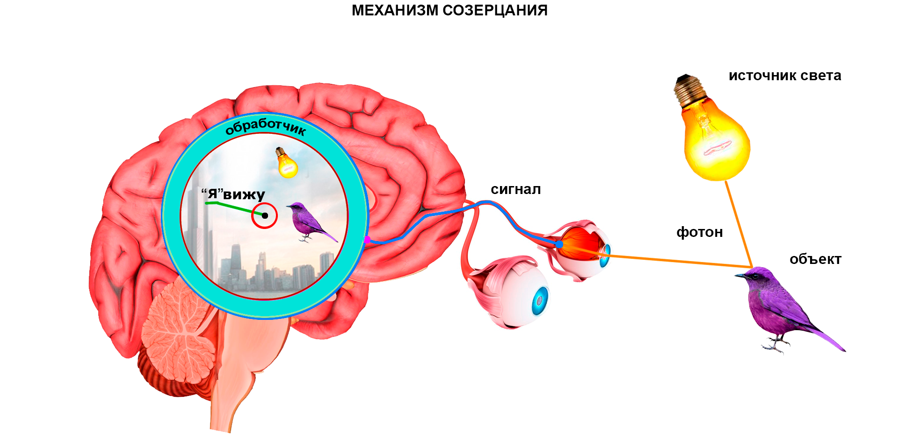

полный текст книги:
Ничто и Точка (предисловие)
Цель
Созерцаемое
Сущность
Сознание
Двухаспектная Сущность
Четвертое измерение и ...
Общество и Человечество
Пятое измерение и ...
Первовозникновение
Акт "Я"
Процесс изучения Акта "Я"
Смысл Бытия
Развитие Сущности
Коллективная реальность
Система развития Сущности
Эхо (отражение)
Реальный аспект Глоб. "Я"
О мировоззрении
Пространство-время
Осношение к Себе
Отношение к своему телу
Лень
Страх
Надежда (Ожидание Чуда)
Адаптация
Тождество личности
Отношение [Рассудок|Тело]
Свобода Воли
Трудная проблема Сознания
Неразличимость и идентичн.
Материя
Гносеология
Эпистемология
Разделение
на главную страницу сайта
— глава третья —
————————————————————————————
————————————————————————————
СОЗЕРЦАЕМОЕ
Давным-давно, человек решил выбрать для себя Идею, превратившуюся в стереотип, что созерцаемое находится снаружи. Эта позиция простая и вполне понятная. Нам кажется, проще объяснить – почему они решили именно так, а не иначе. Часть исследователей в этой аудитории убеждены в правоте материалистической (физической) модели Мира, а другая часть, напротив – имеют ‘некие’ идеалистические представления. Так или иначе, есть множество противоречивых положений, не имеющих доказательств, доведенных до ‘статуса Неоспоримой Истины’ посредством авторитетных, но голословных утверждений, базирующихся на субъективном выборе. Это касается самых важных, фундаментальных вопросов. Предлагаем вместе разобраться, в процессе исследования;
По сравнению со слухом, вкусом, обонянием, осязанием – зрение является наиболее информативным инструментом ‘Восприятия Реальности’. Технически, принцип работы всех органов чувств одинаков: воздействие на рецепторы (т.е. поступление данных) -> сигнал в мозг -> обработка сигнала, т.е. Интерпретация* и Восприятие результата; Очевидно, что эффективность зрительного восприятия, значительно превосходит обоняние, например. Мы не чувствуем тонкий запах объектов на большом расстоянии, не сможем одновременно различить более десяти запахов, но видим намного дальше чем чувствуем запахи – широко и высоко, с передачей цветов и динамикой тысяч объектов в этой грандиозной картине фрейма реальности, поэтому мы считаем, рационально начинать изучение с вопросами:
Как устроен механизм созерцания? Как это происходит? Очевидное изучать не будем, поэтому – предлагаем сразу принять как аксиому: Все объекты мы видим по одному принципу. То есть, звезды, небо, деревья, и собственное тело – все видимые объекты созерцаются нами технически одинаково, посредством одного инструмента – “зрения”; Предлагаем предварительно обсудить необходимые здесь термины – выяснить и принять их краткие значения:
Рассудок – это индивидуальный инструмент «Я», обеспе чивающий, работу с данными и опытом, анализ, выводы. Значимость рассудка, переоценить никак не получится – без использования рассудка «Акт самодостоверности “Я”» окажется абсолютно невозможен, так как требует анализа (Я мыслю) и заключения (Следовательно, Я существую). Рассудок не принимает решений, этот инструмент нельзя признать самостоятельно-активным. Мы это еще обсудим;
Очевидно, отсюда последует, что «Собственно “Я”», без рассудка, есть бессознательная волновая функция, но – в таком случае, мы не отдавали бы Себе отчет о жизненной активности, и проявлении способности к волеизъявлению;
Кроме этого, возникает вопрос: По отношению к Чему? Во первых (и в любом случае), сама-собою определяется необходимость в базовой относительности бытия, т.е. вообще – к статичной, пассивной противоположности, в отношении (сопоставлении), либо в прямой интеграции, с которой, «Я» имеет возможность проявлять присущую «Ему» активность. Допустим – «Сознание». Во вторых, мы имеем самоочевидное заключение о многочисленности различных «других Я?», которые (с позиции каждого) не являются моим «Я», то есть те, другие, которые «Не Я». Касающиеся этого вопросы, мы тоже обсудим, позже;
Ум – это развиваемое средство рассудка и свод методик – индивидуальные методы использования возможностей рассудка, построение особых мыслительных функций с применением опыта (чувственного и психического в том числе) и логических выводов. Ум, сам по себе ничего не решает – любые решения принимаются «Я» (буквально «Свыше»), однако, Ум управляет категорией критериев, оперирует свойствами и методами. Вот пример выбора: умножить сто на три, или – к трём, 99 раз прибавить три. Можно иметь сотни отдельных методов и приемов, или объединить в одно очень эффективное средство – «Ум»;
Разум – свойство особых живых существ – развиваться рационально и эффективно, посредством использования рассудка и применения ума. Разумные существа способны изъявлять желание, проявлять волю и намерение, мыслить и изучать, созидать, творить, любить и радоваться, иметь культуру – говорить, танцевать, петь, шутить… ‘Разумные в пределах Вселенной’, имеют потенциально бесконечное число мыслимых и немыслимых свойств. Тем не менее, в зависимости от степени развития, или даже психического состояния, могут иметь ряд особенных характеристик, среди которых (давайте улыбнемся): они, по какому-то «соответствующему поводу», или без всякой причины :), могут быть общительны, гостеприимны и дружелюбны, и напротив – агрессивны, коварны и очень опасны, либо это субъективно и «мы так думаем потому что сами такие»?
* * *
Среди людей (и не только ), бытует утверждение, что 'мозг видит окружающие объекты’. Однако, нам понятно что есть один самый важный Элемент констатирующий все результаты, который, чувствует непосредственно, и ‘видит по факту’ – в конечной инстанции, и в результате всех системных итераций (рассудка). Главный Элемент! – наделенный Жизнью, желающий, проявляющий намерение, чувствующий, признающий процесс завершенным. Как раз именно этот Элемент и является Тем, что мы называем «Я» – это именно То, что мы считаем «Самим Собой» – во всех случаях, когда говорим «Я», будь то себе, или же кому-то еще, а равно и когда думаем: «Я» – подразумевая этим «Самого Себя», в прямом смысле, и от Своего Лица;
Относитесь к талдычествам с пониманием – необходимо донести смысл до Себя прежде всего, и далее, одинаково правильно до каждого – способного понять, осознать, и никогда не путать «Я», то есть «Самого Себя», со своим собственным телом, являющимся важной «вещью», что разумеется, но именно представлением конкретного «Я» в условиях реальности (и в соответствующей форме), для возможности участия в ситуациях (и извлечения опыта);
* * *
Продолжим исследование:
Рассмотрим механизм текущего созерцания, то есть – в данный момент времени, как и в любой из моментов, но прямо сейчас; Следует отметить, видения ментальные, во сне, в бреду, под гипнозом, мы не рассматриваем, так как механизм созерцания, принципиально одинаков, коли видение активной действительности в тех состояниях, мы зачастую путаем с явной фактической реальностью;
Рассуждение будем строить с наиболее популярной, материалистической позиции – так будет доступно и понятно для большинства людей [это здесь и сейчас]:
1. Фотоны, излучаемые любым источником света, отражаются от объекта и воздействуют на клетку сетчатки глаза;
2. Клетка сетчатки, инициирует электрический сигнал, поступающий в головной мозг;
3. Сигнал обрабатывается, посредством использования обработчика (рассудка);
4. «Я» созерцаю объект, как результат обработки. Мы говорим – «Я вижу» – это момент текущего созерцания;
Контент созерцаемого результата обработки, необходимо интерпретирован – с учетом имеющегося опыта «Я». Мы видим прежде, чем понимаем – «Что именно мы видим?». Далее происходит то, что нам прекрасно известно – это внутренние процессы: сравнения, мышления, анализа, психические, и прочие – они выполняются средствами рассудка. Любой опыт, как субъективный вывод «Я», тоже формируется рассудком. Ситуация запоминается целиком, сохраняется в памяти как информация, не являясь опытом;
Извлекаемый Опыт – это только новые { отношения, знания, объекты, чувства, ощущения, эмоции, формы, мысли, мыслеформы, ситуации, шаблоны ситуаций };
То есть, можно утверждать, что любая ситуация, это лишь потенциальный опыт, как можно утверждать и то, что нет «пустых деталей», не содержащих никакого смысла, и из каждой из них, при должном внимании и анализе, можно извлечь опыт, будь то любой объект (также его динамика и изменения), или часть ситуации, либо ситуация в целом;
Момент реализации* реальности, всегда соответствует точке сосредоточения – это точка текущего внимания. Качество реализации в данной точке, наиболее высокое – интерпретация обеспечивает необходимые условия для точной квалификации, ясности понимания, детализации свойств и форм из доступных в опыте, и соответствующих индивидуальным возможностям, а именно: ‘Потенциалу Рассудка’ использующего при этом уникальные методы и функции, то есть, субъективные, и подверженные особым психическим отношениям и влияниям надстройки. Надо отметить, что качество прочих, боковых объектов, ниже чем в точке сосредоточения. На периферии созерцаемое значительно размывается, четкость границ объектов почти отсутствует, они будто плавают, по сравнению с ясностью и конкретикой в точке сосредоточения. Цвета объектов на периферии искажаются до приблизительных, с оттенками серого. Качество интерпретации? периферийных объектов, их ситуативных значений, а также и общего смыслового содержания, уступает находящимся в центре внимания. Общая картина созерцания – Контент, так называемого «Фрейма Реальности», выглядит как ореол, с наивысшим качеством в центре и постепенным его снижением при удалении от центра в стороны (Напоминая «трубу», что очень важно – необходимо иметь ввиду эту странность);
Механизм и процессы созерцания раздельных объектов работают асинхронно – например, если в зону нашей видимости вдруг внезапно одновременно попадет три четыре разных предмета, тогда их точная и детальная интерпретация, а затем ‘идентификация – происходит последовательно’, и так далее – при перемещения точки сосредоточения. Однако, объекты не находящиеся в точке сосредоточения, будут интерпретироваться одновременно, пусть предварительно и грубо, но это происходит быстро, параллельно и асинхронно. Какое-то, пусть и очень малое время, мы не в состоянии установить ‘какие это объекты’;
Время требуемое на установление ясности, для каждого объекта разное. В зависимости от содержательности – одни объекты интерпретируются практически мгновенно, другие же буквально проявляются, медленно наполняясь сутью, определением, необходимой смысловой ясностью;
Также медленно интерпретируются «забытые» объекты, которые реализуются, т.е. созерцаются и требуются для использования очень редко, либо крайне измененные до уровня ‘сложно узнаваемых’. Например, с трудом можно идентифицировать человека, с которым не встречался 30 40 и более лет, а потом столкнулся с ним ‘лицом к лицу’;
*Реализация – как неподвижный момент, подразумевает «фрейм реальности» (подобие скриншота с экрана монитора), то есть, зафиксированная ситуация, в форме созерцаемой картины. Но, реализация наблюдаемая «в процессе» – это буквально явление, отражающее преобразование имеющегося опыта в новый опыт. Если посмотреть на процесс с «Глобальной позиции», то это происходит только в целях развития «Сущности» посредством приобретения нового опыта – ментального, психического, или любого иного, но обязательно нового, и более рационального и эффективного. Реализуемые ситуации многокомпонентны, но не содержат бесполезных деталей. Анализируя каждый объект и любую ситуацию, можно бесконечно извлекать новый опыт;
Учтем и то, что при недостатке света, качество реализации ситуации (фрейма реальности) снижается и, в полной тьме изображение полностью исчезает. Закрыв глаза, будучи в темноте, человек ничего не видит невооруженным глазом, т.е. в обычном состоянии. Интерпретация объектов, при слабом освещении, будет замедленной как при недостатке данных, или при ограничении ‘ширины канала’. В поздних сумерках, время распознавания объектов увеличивается, и мы часто сталкиваемся с данным казусом: 'присмотрись’;
Чтобы иметь полное представление необходимо детально исследовать механизм созерцания. Глаз – это инструмент подобный оптическому прибору с «датчиками-клетками» способными реагировать на фотоны но, внешние ли они?

Рис. 1
Колбочковые клетки глаза, ‘при воздействии фотонов', отправляют соответствующие электрические сигналы в мозг. Затем, сигналы обрабатываются и, результат обработки реализуется в реальной картине, и одновременно созерцается, после чего мы говорим «Я» вижу. Фокусируя наше зрение в точке сосредоточения - «Я» отчетливо вижу конкретный объект, и нечетко вижу прочее, окружающее;
Это важно: Обратите особое внимание на момент воздействия фотонов на клетку глаза – в этот момент фотоны пересекают границу тела, и далее, всё происходящее подразумевается внутренними процессами (сигналы не вылетают обратно, все происходит внутри). Тело реализуется в представлении «Собственно Я Есть – здесь, и вот так выгляжу». Посмотрите в зеркало – таким Вы Себя реализуете, если быть точнее – «Я» так Себя реализует в соответствии с имеющимся опытом. После пересечения границы тела, через глаза и колбочковые клетки, сигналы поступают в мозг, там они обрабатываются и «Я» видит созерцаемое. То есть, это Вы сейчас видите то, что прежде считали независимым от Сознания*, и именно – внешним. Оглянитесь, и посмотрите вокруг – об этом созерцаемом сейчас идет речь. Данный момент крайне важен в нашем исследовании. Сосредоточьтесь и проанализируйте, как происходит этот переход «внутрь Себя» (происходит ли?);
Для надежного понимания, снова и снова пытайтесь признать Это «Я» в рассуждениях – «Своей Собственной Самостью». Когда мы рассуждаем о «Я», то каждому следует подразумевать «Себя Самого». Мы можем особо сосредоточиться и также предположить «Я» каждого человека, как со своей, так и с его позиции, но отвлеченно, воспринимая картину со стороны, будучи наблюдателем;
В устройстве механизма созерцания все очень понятно и нет ничего нового. Тоже самое подтверждает наука, и сегодня это объективная схема. Но, особое значение имеет «угол», под которым на эту схему необходимо смотреть;
*Сознание (в данном исследовании) – имеет иное значение, чем привычное, общепринятое в философии, науке, и в современной литературе. В процессе изучения, мы вместе будем двигаться к объяснению этого понятия, для адекватного понимания «Сути»;
Мы посмотрим совсем иначе – по новому. Предлагаем до предела упростить «Схему Механизма Созерцания»: Фотоны отражаются от объектов, воздействуют на клетки сетчатки глаз. Клетки инициируют сигналы и отправляют их в мозг. После чего происходит обработка этих сигналов и затем мы констатируем «Я вижу». Внимательно изучите, и как можно ярче представьте себе эту схему. Механизм созерцания тривиален и осознав его, мы станем способны перейти на другой уровень. Углубившись в рассуждение придется сосредоточиться, и быть более внимательными;
Обработчик сигнала (см. рис.1) непреодолимо изолирует и разделяет между собой элементы в данном рассуждении:
объект -> [ ф–клетка–э ] -> обработчик -> созерцаемое
Блок [ ф–клетка–э ] фотон-клетка-электрон, непреодолимо и необратимо разделяет наружные объекты от внутренних процессов, то есть, мы созерцаем внутри без возможности выглянуть наружу. Кроме этого, «обработчик» – надежно уничтожает прежний формат (если он был), конвертируя неким, неизвестным нам образом в то, что мы и называем созерцаемое – видимое, которое не может быть снаружи;
Нам понятна Суть непреодолимости системных барьеров и необратимости процессов, и мы понимаем, что никаким образом не можем видеть нечто «внешнее» напрямую, но как тогда нам «удается» помыслить о внешнем, будучи в условиях полной изоляции? Многие исследователи в этой аудитории абсолютно уверены в том, что используя глаза, внешние объекты посредством фотонов транслируются (!) в головной мозг, и мы видим их внутри, но созерцаемые и «физические», они однозначно находятся снаружи, …они именно так думают и даже говорят, что «сами объекты мы не видим» – подразумевая их существование независимым и внешним (нам это ретро-представление очень знакомо);
При знании устройства это и есть ‘нонсенс’, хотя главная проблема и заключается именно в том, что самое простое оказывается крайне сложным для понимания, поэтому нам поможет только методичное повторение, и периодическое возвращение к данной конструкции, то есть её объяснение другими (и разными) словами, и взгляд с разных позиций. Учтем, что не только обработчик оказывается преградой, а есть и другие препятствия, например фотоны – выступают только в роли носителя информации, и не являются самим созерцаемым объектом (пока это именно так); клетка глаза принимает фотоны, но отправляет электрический сигнал в мозг обработчику; отметим особо - результат обработки сигнала не есть созерцаемое, в сознательном смысле;
Созерцание образов является психическим феноменом, присущим живой «Сущности»;
Можете заменять «Сущность» термином «Монада», или «Душа» – особенно когда речь идет об активности «Я» в условиях реальности, но намеренно воздержимся в целях избежания ошибочных толкований (скоро мы изучим это понятие) – не стоит торопиться называть кубок ‘Граалем’;
Разумеется, мы хорошо понимаем, что это происходит с нами прямо сейчас и, глядя на схему, сможем отчетливо представить, как : «Я» находится в неком пространном внутреннем пузыре, т.е. «Я Сам» (с позиции каждого из нас, сейчас), словно купаюсь в фактической реальности;
Здесь и сейчас, все мы, находясь в данной аудитории, и в этих самых условиях полной изоляции от предполагаемого нами «внешнего» – рассуждаем об устройстве механизма созерцания, и говорим: «’Фотонная волна’ отражается от объекта и так далее», однако мы рассуждаем уже находясь в этих самых условиях. И снова посмотрите вокруг, мы изначально находились здесь и на начало рассуждений;
В процессе исследования мы выяснили, что ‘мы внутри Сознания’ – находились здесь и прежде. Если мы, вдруг откажемся принять сию действительность – позволим себе отрицать установленный факт, отбросив <эти идеальные> условия и примемся утверждать обратное, тогда – следуя научным, физическим принципам, мы вновь докажем, что находимся в изолированном пространстве. Из всего этого следует сопутствующий вывод: «Материализм изживает себя на системном уровне» – хотя, это не очень полезное знание, т.к. возможно, мы не нашли бы ‘Истинного Пути’, чем начиная рассуждение с материалистической позиции, или другими словами – всё имеет основание, в том числе и то, кем мы являемся сейчас (негативного опыта не бывает) и, кроме всего прочего, учтем, что – «Всему Свое Время»;
Предлагаем предположить и иную – ‘обратную позицию’. Допустим, изначально мы имеем такую Схему Природы: «Мы в изолированном пузыре – внутри Сознания, и всегда знали, и сейчас знаем только об этом». Теперь оглянитесь вокруг, включите осознанность, затем всё представьте. И? Разумно ли полагать, что ‘Созерцаемый нами Мир’, имеет ‘Настоящий Оригинал’ находящийся где-то там, снаружи, да еще и в некой, неизвестной нам – «физической форме»? Как можно лучше представьте, периодически практикуй тесь представлять это «предполагаемое» нами устройство. Результат от этого упражнения Вас может удивить. Если будете очень внимательны, вскоре улыбнетесь от абсурда – дикого Древнейшего Стереотипа, который довлеет над человечеством с Начала Времен, и мы под Его влиянием;
Известно, что любые объекты созерцаются по одному и тому же принципу. Мы способны не только видеть, но и идентифицировать, квалифицировать, оценивать объекты, осознавать объемность, цвет, взаимную относительность, и другие параметры, размер, удаленность, динамику и т.д. Тем самым, мы ‘разумеем объекты расположенными’, в пространстве и занимающими часть объема. Кроме того отметим, судя по заключениям, основные инструменты: идентификация, квалификация, и анализ, созерцаемых объектов и ситуаций, используются в мыслительных процессах, и обеспечивают сравнение (сопоставление). Эти инструменты можно предположить отдельными от Рассудка, и вполне самостоятельными, как мы выделяем ‘Ум’, в качестве некого математического со-процессора, но они могут быть и встроенными, т.е. сформированными, функциями. Это ничего кардинально не меняет, ни на что не влияет, не возвращает нас к прежнему мировоззрению;
Подчеркнем также возможность развития всех функций. Например: Если в поле зрения будут часто ‘оказываться’ однотипные, но разные по качеству предметы, тогда их обработка (т.е. идентификация и квалификация), по мере извлечения специфического опыта, будет осуществляться, с каждым разом – всё быстрее и точнее. Именно так люди учатся работать на сортировочном конвейере, достигают высот в этом деле, и становятся ‘Узкими Специалистами’;
Мы постоянно используем удивительный инструмент, и называем его ‘Интерпретатор’. Он есть вообще?, или же это обычная функция Рассудка – приобретенная, как и все прочие? Рассуждая о механизме созерцания Вы заметили, что фотоны конвертируются клеткой глаза в электроны – это является крайне важным моментом в исследовании, т.к. на объекты влияют, и используются, соответствующие ситуации условия. Обработка фотонов осуществляться не может, потому что они и есть Суть сами объекты – волна данных, относящаяся к Природе ‘Сознания и Сущности’ в их фундаментальной относительности. Предлагаем Вам не спешить, исследовать все по порядку и изучить это позже. Далее, нам необходимо рассмотреть понятие «Сущность»;
читать следующую главу >> << назад